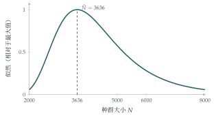

STEP II 2000，第 13 题
继续之前，请先阅读题目（原题为英文）。题目载于 STEP Support Programme 的题目资料库： step.maths.org/questions/00-s2-q13
引子
一个岛上住了多少只田鼠？逐只去数是不可能的：牠们会躲藏，会走动，而且长得一模一样。不过，你可以先捉一些，做上记号，放走，然后再捉一批。假如有 \(200\) 只做了记号，而第二次捉到的 \(200\) 只当中有 \(11\) 只带有记号，那么整个种群中大约有 \(\frac{11}{200}\) 带有记号，所以种群的大小约为 \(200 \times \frac{200}{11} \approx 3636\)。
这种标记重捕法（capture–recapture）用于估计鱼类、鸟类和鲸鱼的数量，也用于估计吸毒者、无家者和战争伤亡者的人数，即任何无法完全计数的总体。这道题用最大似然（maximum likelihood）原理为这个直观的估计打下稳固的基础。最大似然是统计估计中最重要的思想：选取使观察到的数据出现概率最大的那个未知量的值。
动笔之前
种群共有 \(N\) 只田鼠，其中 \(200\) 只带有记号。现随机抽取 \(200\) 只作为样本。恰好有 \(11\) 只带有记号的概率是多少？
从 \(200\) 只有记号的田鼠中选出 \(11\) 只，再从 \(N - 200\) 只没有记号的田鼠中选出 \(189\) 只，而等可能的样本共有 \(\binom{N}{200}\) 个： \[p_N = \frac{\binom{200}{11}\binom{N - 200}{189}}{\binom{N}{200}}.\] 这就是超几何分布（hypergeometric distribution）。
逐步解题
阶段 1 似然
把含有 \(N\) 的二项式系数（binomial coefficient）展开写出， \[\binom{N - 200}{189} = \frac{(N - 200)!}{189!\,(N - 389)!}, \qquad \binom{N}{200} = \frac{N!}{200!\,(N - 200)!},\] 所以 \[p_N = \binom{200}{11}\frac{200!}{189!}\cdot\frac{\bigl((N - 200)!\bigr)^2}{N!\,(N - 389)!} = k\frac{\bigl((N - 200)!\bigr)^2}{N!\,(N - 389)!}. \qed\] 把数据固定，视之为未知量 \(N\) 的函数时，\(p_N\) 称为似然（likelihood）。
阶段 2 对整数求最大值
\(N\) 是整数，所以用微积分并不方便。不如比较 \(p_{N+1}\) 与 \(p_N\)。两者之比何时大于 \(1\)？
大部分阶乘都会互相约去： \[\frac{p_{N+1}}{p_N} = \frac{(N - 199)^2}{(N + 1)(N - 388)}.\] 当 \((N - 199)^2 > (N + 1)(N - 388)\) 时，这个比大于 \(1\)，即 \(N^2 - 398N + 39601 > N^2 - 387N - 388\)，亦即 \(11N < 39989\)，\(N < 3635.4\)。所以 \(p_N\) 一直递增至 \(N = 3636\)，其后递减：最大似然估计值为 \[\hat N = 3636. \qed\] 这正是 \(\frac{200 \times 200}{11} = 3636.4\) 的整数部分，也就是那个直观的估计。
阶段 3 第三个样本
抽取第二个样本之后，其中 \(189\) 只没有记号的田鼠也被做上记号，所以现在共有 \(389\) 只田鼠带有记号。取 \(N = 3636\)，则有 \(3636 - 389 = 3247\) 只没有记号。第三个含 \(200\) 只田鼠的样本中恰好有 \(j\) 只带有记号的概率为 \[\frac{\binom{389}{j}\binom{3247}{200 - j}}{\binom{3636}{200}}.\] 这些概率（对 \(j = 0, 1, \ldots, 200\)）之和必定等于 \(1\)，由此即得该恒等式。■

回顾
把数据的概率看成未知量的函数。似然把惯常的观点倒转过来：数据固定不变，参数（parameter）才是变量。
用比值求离散最大值。比较相邻两项，便找出了一个整数变量函数的最大值所在。
概率之和为 \(1\)。把一个分布对所有结果求和，便证明了一个组合恒等式（范德蒙恒等式，Vandermonde’s identity）。
背后的数学
最大似然
最大似然原理由费雪（Ronald Fisher）在 1910 至 1920 年代发展出来，内容是：以使观察到的数据出现概率最大的那个值，作为未知参数的估计。它是至今应用最广的估计方法，由以曲线拟合数据，到训练机器学习中的神经网络，无一不用；神经网络的“损失函数”（loss function）通常就是负对数似然。费雪证明了，对于大样本，最大似然估计值近似服从正态分布（normal distribution），而且其精确程度不逊于任何合理的估计量（estimator），前提是模型具备某些良好性质，而这些性质对大多数日常模型都成立。不过也有重要的例外。在下一节（第 13.3 节）中，未知量是可能出现的最大值，即分布的一个端点，在那里最大似然估计值的表现大不相同：它的误差并不近似服从正态分布，而且误差是以 \(\frac1n\) 而非 \(\frac{1}{\sqrt n}\) 的速度缩小。
这个估计有多精确？
图 13.2.1 显示似然曲线很宽阔：\(11\) 次重捕所提供的信息并不多。粗略计算一下：第二个样本中有记号田鼠的数目近似服从泊松分布（Poisson distribution），平均值为 \(\frac{200 \times 200}{N}\)，所以其标准差（standard deviation）约为 \(\sqrt{11} \approx 3.3\)，相对误差约为 \(30\%\)，而这个误差会传递到 \(N\) 的估计上。若要把 \(N\) 的估计误差控制在 \(10\%\) 以内，生物学家需要大约 \(100\) 次重捕。统计学家还会修正这个简单估计的轻微偏差（bias），采用查普曼估计量（Chapman estimator）\(\frac{(M + 1)(C + 1)}{R + 1} - 1\)，其中 \(M\) 和 \(C\) 是两次捕捉的数量，\(R\) 是重捕到的数目。
拉普拉斯（Laplace）在 1802 年用了同样的想法，在没有人口普查的情况下估计法国的人口。他知道全国一年内登记的出生人数，并且就一批抽样的市镇而言，同时知道其人口和出生人数。他假设人口与出生人数之比在各地都相同，从而估计法国人口约为 \(28\) 百万，甚至给出了不确定程度的度量。后来这个方法在动物种群研究中被重新发现：C. G. J. Petersen 在 1890 年代于丹麦的峡湾为鲽鱼做记号，Frederick Lincoln 则在 1930 年代使用鸟环；这个方法至今仍常被称为林肯—彼得森（Lincoln–Petersen）估计量。
思维技巧
要估计一个未知量，先把你所观察到的结果的概率写成该未知量的函数，然后求其最大值。
在大学里，最大似然是统计推断（statistical inference）的骨干，并有一套理论说明估计值有多精确（费雪信息量，Fisher information），以及如何比较互相竞争的模型（似然比检验，likelihood ratio test）。
延伸练习
一般公式。若有 \(M\) 只动物做了记号，而第二个含 \(C\) 只动物的样本中有 \(R\) 只带有记号，证明 \(N\) 的最大似然估计值是 \(\frac{MC}{R}\) 的整数部分。
范德蒙恒等式。考虑从 \(a\) 名女士和 \(b\) 名男士中选出 \(c\) 人组成委员会的方法数目，以此证明 \(\sum_j\binom{a}{j}\binom{b}{c - j} = \binom{a + b}{c}\)。
掷硬币。一枚硬币掷出正面的概率 \(p\) 未知，掷 \(n\) 次后观察到 \(h\) 次正面。证明 \(p\) 的最大似然估计值是 \(\frac hn\)。
没有重捕。如果第二个样本中没有任何带记号的田鼠，最大似然估计值会变成怎样？这说明了这个方法的甚么特点？
延伸阅读
David Spiegelhalter, The Art of Statistics（Pelican），谈估计与不确定性。
George Seber, The Estimation of Animal Abundance（Blackburn）。标记重捕法的标准参考书。
John Rice, Mathematical Statistics and Data Analysis（Duxbury）。数理统计的入门课本，内容包括最大似然。